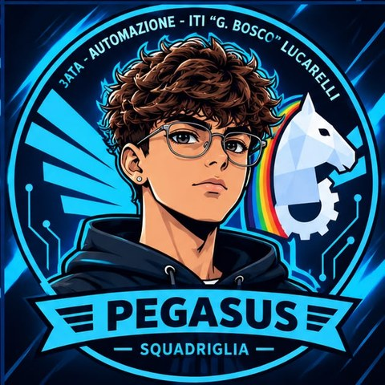
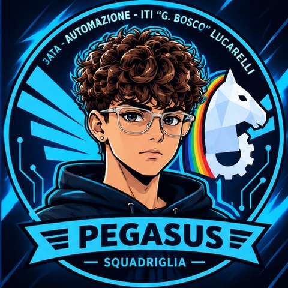
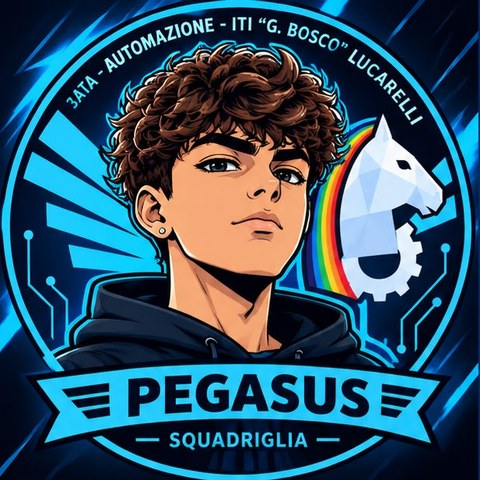
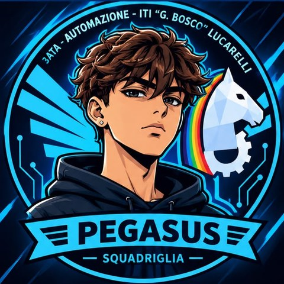

Classe 3ATA · Automazione · ITI "G. Bosco Lucarelli"
«Scrivete qui il vostro motto.»
Le nostre esercitazioniSiamo la squadriglia Pegasus della 3ATA, corso di Automazione. Come il cavallo alato, puntiamo in alto: il capo coordina, il vicecapo lo affianca, il responsabile tecnico costruisce e il responsabile creativo dà forma e colore ai nostri lavori.
Nei nostri avatar il cavallo di cristallo con l'arcobaleno e l'ingranaggio racconta l'unione tra fantasia e tecnica.
Ognuno ha un ruolo e il suo avatar.

Capo squadriglia
Coordina tutto il gruppo, distribuisce i compiti, prende le decisioni insieme agli altri e controlla che il lavoro proceda correttamente.

Vicecapo
Aiuta il capo, lo sostituisce quando necessario e controlla che ogni componente svolga il proprio incarico.

Responsabile tecnico
Si occupa della parte pratica e tecnica dei progetti, degli strumenti, dei materiali e della realizzazione dei lavori.

Responsabile creativo
Cura la grafica, il logo, le presentazioni e l'aspetto estetico dei lavori della squadriglia. Propone nuove idee.
Un lavoro dopo l'altro: qui trovate tutto quello che abbiamo consegnato.
Una voce per ogni lezione.
Abbiamo creato i nostri avatar e consegnato la relazione di presentazione del team, con il ruolo di ognuno.
Abbiamo creato la carta intestata e il modello di relazione tecnica.